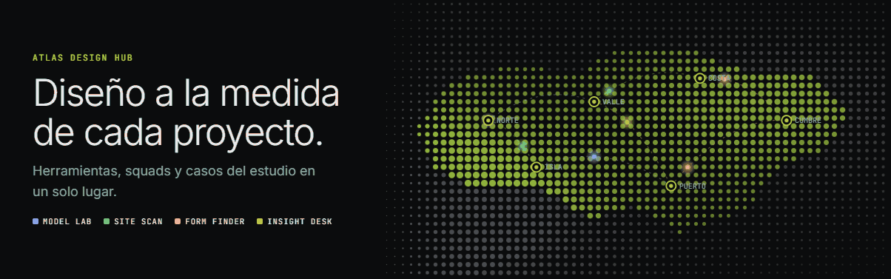

Diseña en HTML. Arma en SharePoint.
Una maqueta que respeta lo que SharePoint sí permite, recetas para armarla y piezas interactivas que entran con el web part Embed.

header exportada como GIF (12 s en bucle, 2.8 MB). Es la alternativa cuando no puedes usar Embed.La idea en 30 segundos
SharePoint fija letra, botones y colores, y no corre CSS ni JS propios en páginas modernas. Tu diseño vive en una maqueta y de ella salen las instrucciones para armar el sitio real.
Tokens y estilos
Colores, tipografía y 1 o 2 direcciones de estilo, con contraste AA.
Un solo HTML fiel
Lienzo de 1204 px, layouts reales y un overlay que etiqueta cada bloque.
JSON + Markdown
Qué web part, qué archivo, qué alt y qué vínculo, página por página.
Borrador en SharePoint
A mano, con una IA en el navegador o por REST. Nunca publicas sin pedirlo.
Elige la ruta de cada bloque
Prefiere siempre lo más simple: nativo, luego imagen, luego Embed o Power Apps. Cada salto agrega mantenimiento. Prueba el overlay con #/home?wp=1.
| Ruta | Úsala para | Costo |
|---|---|---|
| Nativo | Texto, listas, noticias, personas, eventos, enlaces, carruseles de páginas | Lo mantiene cualquier editor |
| Imagen / GIF | Titulares de marca, diagramas, KPIs estáticos, animaciones sin permisos (GIF ≤ 3 MB) | Hay que re-exportar si cambia; alt completo obligatorio |
| Embed | Piezas con estado: pestañas, mapas que reaccionan, grafos | Un admin debe permitir el dominio |
| Power Apps | Formularios, filtros sobre datos, solicitudes (sobre Microsoft Lists) | Licencias, DLP, no hereda el tema |
Cómo traer HTML a SharePoint
SharePoint no muestra un .html subido (lo descarga). La salida: hospedar la pieza en GitHub Pages y mostrarla con el web part Embed, que es un iframe.
- Hospeda
Un repo con GitHub Pages. La pieza usa rutas relativas, así que se sirve desde su carpeta. - Pide una pieza con
?embed=
Quita el chrome y renderiza solo la pieza, interactiva y animada. - Permite el dominio
Un admin lo agrega en HTML Field Security. Sin esto, el Embed sale vacío. - Pega la URL en un web part Embed
Y fija el alto en píxeles: SharePoint no escucha elpostMessagede alto de la pieza.
<!-- lo que pegas en el web part Embed -->
<iframe
src="https://USUARIO.github.io/REPO/simulator/
index.html?embed=impact&s=dark&a=lime"
width="100%" height="700" frameborder="0"
style="border:0;background:#0B0C0D"></iframe>
// lo que la pieza avisa (SharePoint lo ignora):
parent.postMessage({
type: 'sp-sim-embed-height',
piece: 'impact', height: 694 }, '*');
?embed=impact. Cambia de squad y de cifra.?embed=stages. Pasa el cursor por un squad o una etapa.Detalle completo, problemas frecuentes y checklist de piezas: docs/03 · Embed paso a paso.
Sin permisos: imágenes y GIFs
Si no hay admin, la misma pieza se exporta como PNG o GIF y se sube a un web part Image (un solo vínculo, alt completo). El GIF debe pesar ≤ 3 MB.
cd tools && npm install # PNG a doble resolución (columna de 1204 → 2408 px) node export-embed.mjs png header 2408 # GIF: pieza, ancho, segundos, fps node export-embed.mjs gif header 1204 12 12 # intento fps=12 colores=128: 4.84 MB # intento fps=10 colores=96 : 3.78 MB # intento fps=8 colores=64 : 2.77 MB ✓
| Columna | Exporta a |
|---|---|
| 1 columna | 2408 px |
| 2 columnas | 1172 px |
| 3 columnas / 1/3 | 760 px |
| 2/3 | 1584 px |
| Ancho completo | 2560 px |
El reloj de la pieza se congela (window.__simTime) y se avanza cuadro por cuadro. El bucle dura 12 s con frecuencias enteras, así que cierra sin salto.
La receta: la maqueta que se vuelve instrucciones
Cada página es un modelo página → secciones → columnas → web parts. De ese modelo salen el DOM de la maqueta y los archivos de la receta. Míralo en vivo en #/recipe.
sec('31', 'none', [ // 2/3 + 1/3
[ wp('n', 'Highlighted content',
hcHTML, {motivo:'proyectos'}) ],
[ wp('n', 'Events',
eventsHTML, {motivo:'eventos'}) ]
]),
sec('1', 'neutral',
[[ embedWp('stages') ]]) // pieza Embed
# Receta: Inicio ## Sección 3 · 1 columna · Fondo: neutral 1. **Embed** (Embed) · ruta s2.c0.w0 - Embed: pegar `…?embed=stages` - Alto fijo: 490 px (1204) · 480 px (760) - Alternativa: subir `…-stages.gif` (≤ 3 MB)
Ejemplos completos en examples/: pagina.json, receta.md y manifiesto.json de cada página, más embeds.json.
Documentación
Todo el método, de la fase 0 a la QA, con lo que sí se probó y lo que hay que verificar en tu tenant.
?embed=, alto y permiso de dominio.
04 · Imágenes y GIFsTamaños, nombres y el pipeline de GIF ≤ 3 MB.
05 · Receta y ensamblajeA mano, con IA o por REST. Power Apps.
06 · Personalizar y extenderCambiar estilo, agregar páginas, web parts y piezas.
07 · Publicar y privacidadGitHub Pages y qué no debe ser público.
?embed= y los exportadores están probados. Las opciones exactas del web part Embed y la inserción final dentro de SharePoint dependen de tu tenant: pruébalas en una página de borrador antes de diseñar sobre ellas.